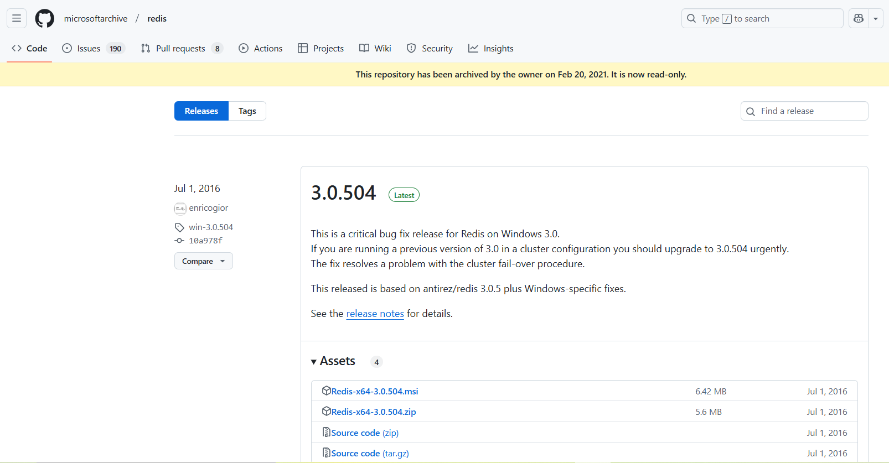
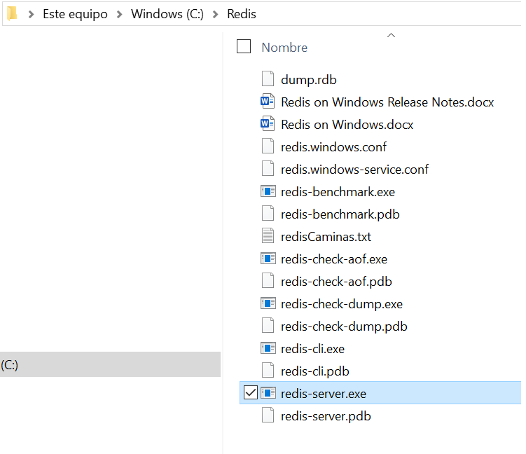
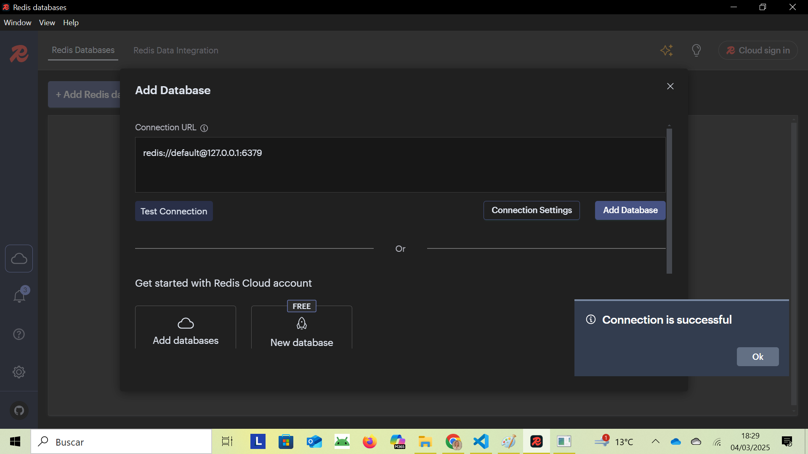

2 - Bases de Dades Clau-Valor
Segurament de tots els tipus de Bases de Dades NoSQL existents, la de més fàcil comprensió és la Base de Dades Clau-Valor. En ella s'aniran guardant parelles clau-valor, és a dir, el nom d'una determinada propietat i el seu valor. La clau ha de ser única, és a dir, no es pot repetir ja que en cas contrari no es podria tornar a recuperar.
Per tant no hi ha definició de taules ni cap altra estructura; es van guardant parelles clau-valor i prou. En el moment de recuperar la informació veurem que podrem obtenir el contingut d'una clau, o el de més d'una al mateix temps.
L'exemple que veurem de Base de Dades Clau-Valor és Redis , molt famosa per a seua potència i eficiència.
La clau sempre és de tipus String, i com ja hem comentat no poden haver dues claus iguals. En Redis els valors poden ser de 5 tipus diferents:
- Cadenes de caràcters (String). Per exemple: nom_1 -- > Albert
- Mapes (Hashes) que vindria a ser un registre amb subcamps (sub-claus). Per exemple: empleat_1 -- > [ nom="Albert" , departament="10" , sou="1000.0" ]
- Llistes (Lists) que són conjunts ordenats de valors. Per exemple: llista_1 -- > { "Primer" , "Segon" , "Tercer" }
- Conjunts(Sets) són conjunts desordenats de valors. No importa el seu ordre, i de fet serà impredecible l'ordre amb el qual els torna Redis. Per exemple: colors -- > { "Blau" , "Verd" , "Roig" }****
- Conjunts Ordenats (Sorted Sets) , que intenten reunir els avantatges dels conjunts, però que seran ordenats. Ja veurem la diferència entre llistes i conjunts ordenats.
Algunes característiques de Redis són:
- És una arquitectura client-servidor
- És extraordinàriament eficient quan es pot carregar tota en memòria, encara que si no pot carregar-la també funcionarà de forma molt ràpida. I a més manté una sincronització constant a disc per a fer les dades persistents. Aquesta tasca la fa en segon pla, de manera que no afecta al servei.
- Per a poder suportar ratios de lectura molt alts fa una replicació master/slave, és a dir que pot haver més d'un servidor, i un és el que actua de master i els altres són rèpliques del primer. El slave rep una còpia inicial de la Base de Dades sencera. A mida que es van realitzant escriptures en el master, es van enviant a tots els slaves connectats. Els clients es poden connectar als distints servidors, bé siga al master o als slaves, sense haver de carregar sempre al master.
2.1 - Instal·lació de Redis
Redis està construït per a Linux. També funciona, però, des de Windows com veurem una miqueta més avant.
Instal·lació en Linux
El lloc des d'on baixar-lo és la pàgina oficial:
https://redis.io/docs/latest/operate/oss_and_stack/install/install-redis/install-redis-from-source/
En el moment de fer aquestos apunts, l'última versió estable és la 7.4.1.
Per obtenir els fitxers font de la darrera versió estable de Redis des del lloc de descàrregues de Redis, executeu:
wget https://download.redis.io/redis-stable.tar.gz
Compilando Redis
Suposarem que el fitxer està col·locat en el lloc on volem que estiga instal·lat de forma definitiva. Per compilar Redis, primer extrae el fitxer tar, canvia al directori arrel i després executa make:
tar -xzvf redis-stable.tar.gz
cd redis-stable
make
Amb açò s'haurien d'haver generat els executables, i ja hauria de funcionar.
Per a posar en marxa el servidor, quasi que el més còmode serà obrir un terminal, situar-nos en el directori redis-stable/src i des d'ahi executar redis-server. Hauria d'eixir una finestra similar a la següent, amb més o menys avisos (observeu que al principi de la imatge estàn les ordres donades per a executar el servidor).
Entre altres coses diu que el servidor està en marxa esperant connexions al port 6379, que és el port per defecte de Redis. Aquesta finestra del terminal l'haurem de deixar en marxa. Quan vulguem detenir Redis, senzillament fem ctrl-c , i detindrem l'execució de forma ordenada (guardant-se les dades no guardades)
Podríem haver executat directament redis-server fent-li doble-clic des d'un explorador d'arxius, per exemple, però aleshores no podríem parar-lo i en definitiva controlar-lo tan còmodament.
Per a fer una connexió des d'un client, també des d'un terminal (un altre) executem redis-cli :
Ja ha fet la connexió, concretament a localhost (127.0.0.1) i al port 6379, que havíem quedat que és el port per defecte.
Comprovem que sí que funciona. Encara no hi ha dades, perquè l'acabem d'instal·lar. I recordeu que és una Base de Dades clau-valor. Per crear una entrada posarem set clau valor. Per a obtenir-la posarem get clau. En la imatge es pot comprovar:

Hem creat una clau anomenada clau_1 amb el valor primera , com es pot comprovar en el moment d'obtenir-la amb get.
Si al programa redis-cli no li posem paràmetres, intentarà fer una connexió local (localhost). Si volem connectar a un servidor situat en una altra adreça, li la posem amb el paràmetre -h adreça , per exemple:
redis-cli -h 192.168.1.26
Connexió al servidor de l'Institut
En el servidor de dades de l'Institut també tenim instal·lat redis. Però per a no tenir accessos no desitjats, cal una autenticació. Senzillament és posar el comando auth amb la contrasenya que ja hem utilitzat en altres ocasions: auth ieselcaminas.ad
En la següent imatge es veu com sí que hem pogut connectar

Instal·lació en Windows de 64 bits
Encara que Redis està construït per a Linux, hi ha versions per a Windows, preferiblement de 64 bits.
El lloc on poder baixar els fitxers de Redis per a Windows de 64 bits és: https://github.com/MSOpenTech/redis/releases
Versió
En el moment de fer aquestos apunts, la darreara versió es la 3.0.504.

Ens baixem el zip, el descomprimim, i ja ho tindrem disponible (sense fer make ni res). Observeu com en la carpeta resultat de descomprimir ja tenim els executables redis-server i redis-cli que són els que ens interessen:

Executem redis-server directament i ja el tindrem en marxa:

Executem també el redis-cli i el resultat serà el mateix que en Linux.
2.2 - Entron gràfic: Redis Insight
Com hem comprovat en el punt anterior, la connexió que fem des del client és a través de consola. Per tant haurem de posar comandos i ens contestarà la seua execució.
Podem instal·lar-nos una aplicació gràfica que faça un poc més atractiva la presentació.
La instal·lació d'aquesta eina és totalment optativa, no cal que la feu. De fet, ens els exemples que es mostraran en tot el tema només s'utilitzarà el mode consola.
És completament independent del servidor, i podem instal·lar-la perfectament sense tenir el servidor, utilitzant-la aleshores per a connectar a un servidor remot.
El podem baixar lliurement de la pàgina oficial redis.io/insight on podrem comprovar que tenim per a totes les plataformes:
Instal·lació en Windows
En Windows el que ens baixarem és un exe. L'executem (permetent l'execució quan ho pregunta Windows) i li podem donar a totes les opcions per defecte.
Quan l'executem, ens eixirà la següent pantalla:

Podem comprovar que tenim el botó per a afegir una BD Redis (+ Add Redis database). Per a connectar al servidor local la conexió serà redis://default@127.0.0.1:6379. En la imatge s'ha fet el test de connexió.

Per a connectar a un remot, posarem la seua adreça.

En aquesta imatge es veu com hem connectat perfectament als dos servidors.
2.3 - Utilització de Redis
Anam a veure la utilització de Redis, Ens connectarem com a clients i intentarem fer operacions.
- Les primeres seran les més senzilles, utilitzant únicament el tipus de dades String.
- Posteriorment mirarem com treballar amb les claus: buscar-ne una, veure si existeix, buscar unes quantes, ...
- Després ja anirem a pels tipus de dades més complicats:
- Hash
- List
- Set
- Sorted Set
2.2.1 - Strings
És el tipus de dades més senzill, més bàsic. Serà una cadena de caràcters de tipus binarysafe en la qual normalment guardarem les habituals cadenes de caràcters, però que també podríem guardar imatges o objectes serialitzats. La grandària màxima és de 512Mb.
Ara veurem els comandos més habituals que afecten a aquest tipus. Com a norma general, hem de ser conscients que els comandos no són sensibles a majúscules o minúscules, però les claus i els valors sí que ho són. És a dir, el comando get també es pot escriure GET o Get. Però la clau Hola és diferent de la clau hola.
GET
Sintaxi
get clau
Torna el valor de la clau especificada, sempre que siga de tipus String. Si la clau és d'un altre tipus, donarà error. I si la clau no existeix, tornarà el valor especial nil .
Exemples
127.0.0.1:6379> get clau_1
"primera"
127.0.0.1:6379> get clau_2
(nil)
SET
Sintaxi
set clau valor
Assigna a la clau especificada com a primer paràmetre el valor especificat com a segon paràmetre. Si el valor consta de més d'una paraula, haurà d'anar entre cometes dobles.
Redis sempre guardarà el valor com a string, encara que nosaltres pensem que li passem un valor enter o real.
I una altra característica és que si la clau existeix ja, matxacarà el seu contingut, com era de esperar.
Exemples
127.0.0.1:6379> set clau_2 segona
OK
127.0.0.1:6379> set text "Un text amb més d'una paraula"
OK
127.0.0.1:6379> set quatre 4
OK
127.0.0.1:6379> get quatre
"4"
127.0.0.1:6379> set pi 3.14159265359
OK
127.0.0.1:6379> get pi
"3.14159265359"
Nota
Si poseu algun accent, en tornar el valor (fent get) us semblarà que no s'ha guardat bé. Sí que s'haurà guardat bé, el que passa és que posteriorment no es visualitza bé en fer el get. Es pot comprovar entrant en el client amb l'opció raw , és a dir redis-cli --raw
El comando SET té una opció molt interessant, que servirà per a donar un temps de vida a la clau, transcorregut el qual desapareix la clau (amb el seu valor clar). Açò s'anomena temps d'expiració i s'aconsegueix amb el paràmetre EX del comando SET seguit del número de segons que volem que dure la clau.
Exemples
127.0.0.1:6379> set clau_3 tercera ex 10
OK
127.0.0.1:6379> get clau_3
"tercera"
127.0.0.1:6379> get clau_3
(nil)
Primer sí que existeix, però al cap de 10 segons ha deixat d'existir.
De forma equivalent es pot expressar el temps en milisegons, amb el paràmetre PX en compte de EX.
Havíem comentat al principi, que si en el moment de fer el SET la clau ja existia, es reemplaçarà el seu contingut. Podem modificar aquest comportament amb el paràmetre NX (Not eXists): si no existia la clau, la crearà amb el valor, però si ja existia, la deixarà com estava. Ens ho indicarà dient OK en cas de crear-la i NIL en cas de no crear-la perquà ja existia.
127.0.0.1:6379> set clau_4 quarta nx
OK
127.0.0.1:6379> set clau_1 quarta nx
(nil)
127.0.0.1:6379> get clau_4
"quarta"
127.0.0.1:6379> get clau_1
"primera"
I de forma inversa, si posem el paràmetre XX , si ja existeix la clau, reemplaçarà el valor, però si no existia, no farà res.
SETEX
Sintaxi
setex clau segons valor
Funciona igual que el SET amb el paràmetre EX : crearà la clau amb el valor, però tindrà una existència dels segons indicats.
PSETEX
Sintaxi
psetex clau milisegons valor
Funciona igual que l'anterior, però el que especifiquem són els milisegons d'existència.
MGET
Sintaxi
mget clau1 clau2 clauN
Torna una llista de valors, els de les claus indicades.
Exemples
127.0.0.1:6379> set mes1 gener
OK
127.0.0.1:6379> set mes2 febrer
OK
127.0.0.1:6379> set mes3 març
OK
127.0.0.1:6379> mget mes1 mes2 mes3
1) "gener"
2) "febrer"
3) "mar\xc3\xa7"
Nota
Recordeu que els caràcters com vocals accentuades, ç, ñ, ... s'han introduït bé, però potser no es visualiten bé. Es pot evitar entrant en el client d'aquesta manera redis-cli --raw
Si alguna de les claus no exiteix, tornarà nil en el seu lloc
MSET
Sintaxi
mset clau1 valor1 clau2 valor2 clauN valorN
Assigna els valors corresponents a les claus. És una operació atòmica: es posen (o canvien) tots els valors a l'hora.
127.0.0.1:6379> mset mes4 abril mes5 maig mes6 juny mes7 juliol
OK
127.0.0.1:6379> mget mes1 mes2 mes3 mes4 mes5 mes6 mes7
1) "gener"
2) "febrer"
3) "mar\xc3\xa7"
4) "abril"
5) "maig"
6) "juny"
7) "juliol"
Si no vulguérem reemplaçar valors, podríem utilitzar el comando MSETNX , totalment equivalent, però hauríem de tenir en compte que si alguna ja existeix i per tant no pot canviar el valor, no faria l'operació, és a dir, tampoc crearia les altres.
APPEND
Sintaxi
append clau1 valor1
Si la clau no existeix la crea assignant-li el valor (com el SET), però si ja existeix, concatena el valor al final de la cadena que ja hi havia.
127.0.0.1:6379> append salutacio Hola
(integer) 4
127.0.0.1:6379> get salutacio
"Hola"
127.0.0.1:6379> append salutacio ", com va?"
(integer) 13
127.0.0.1:6379> get salutacio
"Hola, com va?"
STRLEN
Sintaxi
strlen clau1
Torna el número de caràcters que hi ha en el valor de la clau. Si la clau no existeix, tornarà 0. Si la clau és d'un altre tipus, tornarà error.
127.0.0.1:6379> strlen salutacio
(integer) 13
127.0.0.1:6379> strlen sal
(integer) 0
GETRANGE
Sintaxi
getrange clau1 inici final
Extrau una subcadena del valor de la clau (ha de ser de tipus String) des del número de caràcter d'inici fins al número del final (ambdós inclosos). El primer caràcter és el 0. Si posem de final un número major que l'últim, igual ho traurà fins el final.
Es poden posar també valor negatius que ens ajuden a agafar la cadena des del final. El -1 és l'últim caràcter, el -2 el penúltim, ... I es poden barrejar números positius i negatius. Així el rang 0 -1 és tota la cadena.
127.0.0.1:6379> getrange salutacio 1 3
"ola"
127.0.0.1:6379> getrange salutacio 6 50
"com va?"
127.0.0.1:6379> getrange salutacio 6 -1
"com va?"
127.0.0.1:6379> getrange salutacio -7 -5
"com"
SETRANGE
Sintaxi
setrange clau1 desplaçament valor
Substitueix part del valor de la cadena, a partir del desplaçament, amb el vaolr proporcionat. No s'admenten en desplaçament valors negatius.
127.0.0.1:6379> get salutacio
"Hola, com va?"
127.0.0.1:6379> setrange salutacio 4 ". C"
(integer) 13
127.0.0.1:6379> get salutacio
"Hola. Com va?"
INCR
Sintaxi
incr clau1
A pesar de que Redis guarda els strings com a tals, com a cadenes de caràcters, en algunes ocasions és capaç de transformar la cadena a un número. És el cas del comando INCR , que converteix la cadena en un enter (si pot) i incrementa aquest valor en una unitat.
Si la clau no existeix la crea assumint que valia 0, i per tant després valdrà 1.
Si el valor de la clau no era un número enter, donarà un error.
127.0.0.1:6379> set compt1 20
OK
127.0.0.1:6379> get compt1
"20"
127.0.0.1:6379> incr compt1
(integer) 21
127.0.0.1:6379> get compt1
"21"
127.0.0.1:6379> incr compt2
(integer) 1
127.0.0.1:6379> get compt2
"1"
127.0.0.1:6379> incr clau_1
(error) ERR value is not an integer or out of range
127.0.0.1:6379> set compt3 4.25
OK
127.0.0.1:6379> incr compt3
(error) ERR value is not an integer or out of range
DECR
Sintaxi
decr clau1
Decrementa en una unitat el valor de la clau (senpre que siga un enter).
Pot agafar valors negatius.
Si la clau no existeix la crea assumint que valia 0, i per tant després valdrà -1.
127.0.0.1:6379> decr compt2
(integer) 0
127.0.0.1:6379> decr compt2
(integer) -1
127.0.0.1:6379> get compt2
"-1"
INCRBY
Sintaxi
incrby clau1 increment
Incrementa el valor de la clau en el número d'unitats indicat en increment (el valor ha de ser enter). L'increment pot ser negatiu.
127.0.0.1:6379> incrby compt1 10
(integer) 31
127.0.0.1:6379> incrby compt1 -20
(integer) 11
DECRBY
Sintaxi
decrby clau1 decrement
Decrementa el valor de la clau el número d'unitat indicat en decrement.
127.0.0.1:6379> decrby compt1 5
(integer) 6
2.2.2 - Keys
Ara anem a veure comandos que ens permeten treballar amb les claus, per a buscar-les, veure si existeixen, etc. No importarà el tipus de les claus (de moment només hem treballat amb claus de tipus String , però si ja en tinguérem dels altres tipus també es veurien afectades). En cap cas d'aquestos comandos accedirem al valor de les claus.
KEYS
Sintaxi
keys patró
Torna totes les claus que coincideixen amb el patró. En el patró podem posar caràcters comodí:
- * : equival a 0 o més caràcters. Per exemple "Mar*a" podria tornar "Mara", "Maria", "Marta", "Margarita", ...
- ? : equival exactament a un caràcter. Per exemple "Mar?a" podria tornar "Maria" o "Marta", però no "Mara", "Margarita", ...
- [ab] : serà cert si en el lloc corresponent hi ha un dels caràcters especificats entre els claudàtors. Per exemple "Mar[it]a" podria tornar "Maria" o "Marta", però no "Marga"
Per a tornar totes les claus utilitzarem **keys ***
127.0.0.1:6379> keys *
1) "compt3"
2) "mes5"
3) "mes3"
4) "comp3"
5) "mes7"
6) "mes2"
1) "mes6"
2) "salutacio"
3) "mes4"
4) "mes1"
5) "clau_1"
6) "compt1"
7) "compt2"
127.0.0.1:6379> keys mes?
1) "mes5"
2) "mes3"
3) "mes7"
4) "mes2"
5) "mes6"
6) "mes4"
7) "mes1"
127.0.0.1:6379> keys c*
1) "compt3"
2) "comp3"
3) "clau_1"
4) "compt1"
5) "compt2"
127.0.0.1:6379> keys mes[125]
1) "mes5"
2) "mes2"
3) "mes1"
EXISTS
Sintaxi
exists clau
Torna 1 si la clau existeix, i 0 si no existeix. No importa de quin tipus siga la clau.
127.0.0.1:6379> exists clau_1
(integer) 1
127.0.0.1:6379> exists clau_25
(integer) 0
DEL
Sintaxi
del clau1 clau2 clauN
Elimina la clau o claus especificades. Si posem més d'una clau i alguna no existeix, la ignorarà i sí que esborrarà les altres.
127.0.0.1:6379> del compt2
(integer) 1
127.0.0.1:6379> del mes6 mes7 mes8 mes9
(integer) 2
Observeu que ens indica quantes claus ha esborrat. En el primer exemple ha esborrat la clau especificada, i en el segon diu que ha esborrat 2, que seran mes6 i mes7 , ja que mes8 i mes9 no existien.
TYPE
Sintaxi
type clau
Torna el tipus de la clau especificada. Els valors possibles són:
- string
- hash
- list
- set
- zset (conjunt ordenat)
Exemples
127.0.0.1:6379> type clau_1
string
RENAME
Sintaxi
rename clau novaclau
Canvia el nom de la clau a la clau nova, conservant el valor. Dóna error si la clau antiga no existeix. Si la clau nova ja existia reemplaçarà el seu valor.
Exemples
127.0.0.1:6379> get salutacio
"Hola. Com va?"
127.0.0.1:6379> rename salutacio saludar
OK
127.0.0.1:6379> get salutacio
(nil)
127.0.0.1:6379> get saludar
"Hola. Com va?"
127.0.0.1:6379> rename clau_22 clau_23
(error) ERR no such key
RENAMENX
Sintaxi
renamenx clau novaclau
Igual que l'anterior però únicament si la clau nova no existia. Si ja existia no fa res (tornant 0 per a indicar-h0).
Exemples
127.0.0.1:6379> renamenx compt1 compt3
(integer) 0
127.0.0.1:6379> get compt1
"9"
Estem suposant que la clau compt3 ja existeix
EXPIRE
Sintaxi
expire clau segons
Assigna com a temps d'expiració de la clau els segons especificats. Si ja tenia temps d'expiració, el modifica posant-li aquest valor especificat.
En cas que a una clau amb temps d'expiració li canviem el nom amb RENAME , continuarà amb temps d'expiració que li quedava.
PEXPIRE
Sintaxi
pexpire clau milisegons
El mateix però en milisegons
TTL
Sintaxi
ttl clau
Torna el temps de vida (fins l'expiració) d'una clau. Si la clau no té temps d'expiració, torna -1.
Exemples
127.0.0.1:6379> expire compt3 10
(integer) 1
127.0.0.1:6379> ttl compt3
(integer) 6
127.0.0.1:6379> ttl compt3
(integer) 3
127.0.0.1:6379> ttl compt3
(integer) 0
127.0.0.1:6379> get compt3
(nil)
PTTL
Sintaxi
pttl clau
Igual que l'anterior, però ens torna el temps en milisegons.
PERSIST
Sintaxi
persist clau
Elimina el temps d'expiració d'una clau, si és que en tenia. Ara la clau no expirarà mai.
Exemples
127.0.0.1:6379> expire compt1 20
(integer) 1
127.0.0.1:6379> ttl compt1
(integer) 12
127.0.0.1:6379> ttl compt1
(integer) 7
127.0.0.1:6379> persist compt1
(integer) 1
127.0.0.1:6379> ttl compt1
(integer) -1
127.0.0.1:6379> get compt1
"9"
2.2.3 - Hash
Ja havíem comentat que el tipus Hash és una espècie de registre, amb subcamps (en realitat hauríem de dir sub-claus). Pot tenir qualsevol número de subcamps que són de tipus String.
Redis és molt eficient en quant a l'espai que ocupen els Hash , i sobretot en el temps de recuperació de les dades.
Els comandos que vam veure per al String no es poden aplicar al Hash. Tanmateix els comandos del Hash són molt similars a aquells, començant sempre per H.
HSET
Sintaxi
hset clau camp valor
Assigna al camp especificat de la clau especificada el valor especificat. Si el valor consta de més d'una paraula, haurà d'anar entre cometes dobles.
Si la clau no existia, la crearà, i si ja existia, senzillament afegirà el camp. I si d'aquesta clau ja existia el camp, modificarà el seu valor.
Evidentment, en claus diferents poden haver camps amb els mateixos noms.
Exemples
127.0.0.1:6379> hset empleat_1 nom Andreu
(integer) 1
127.0.0.1:6379> hset empleat_1 departament 10
(integer) 1
127.0.0.1:6379> hset empleat_1 sou 1000.0
(integer) 1
127.0.0.1:6379> hset empleat_2 nom Berta
(integer) 1
127.0.0.1:6379> hset empleat_2 sou 1500.0
(integer) 1
HGET
Sintaxi
hget clau camp
Torna el valor del camp de la clau. Si no existia (el camp o la clau) torna nil. Només podem especificar un camp.
Exemples
127.0.0.1:6379> hget empleat_1 nom
"Andreu"
127.0.0.1:6379> hget empleat_1 departament
"10"
127.0.0.1:6379> hget empleat_2 nom
"Berta"
127.0.0.1:6379> hget empleat_2 departament
(nil)
HGETALL
Sintaxi
hgetall clau
Torna una llista amb tots els camps i els seus valors de la clau. La seqüència és: camp1 valor1 camp2 valor2 ... Però no ens podem fiar que l'ordre siga el mateix ordre que quan el vam definir.
Exemples
127.0.0.1:6379> hgetall empleat_1
1) "nom"
2) "Andreu"
3) "departament"
4) "10"
5) "sou"
6) "1000.0"
HDEL
Sintaxi
hdel clau camp1 camp2 campN
Elimina el o els camps especificats. Si no existeixen algun d'ells, senzillament l'ignora i si que elimina els altres.
Exemples
127.0.0.1:6379> hdel empleat_1 departament
(integer) 1
127.0.0.1:6379> hgetall empleat_1
1) "nom"
2) "Andreu"
3) "sou"
4) "1000.0"
HKEYS
Sintaxi
hkeys clau
Torna una llista amb els camps de la clau. Si la clau no existia, torna una llista buida
Exemples
127.0.0.1:6379> hkeys empleat_1
1) "nom"
2) "sou"
HVALS
Sintaxi
hvals clau
Torna una llista amb els valors (únicament els valors) de tots els camps de la clau. Si la clau no existia, torna una llista buida
Exemples
127.0.0.1:6379> hvals empleat_1
1) "Andreu"
2) "1000.0"
Altres Comandos
També existeixen altres comandos, de funcionament com cabria esperar (els hem vist tots en el cas de String):
- hmget : Torna més d'un camp de la clau
- hmset : assigna més d'un camp a una clau
- hexists : indica si existeix el subcamp de la clau
- hsetnx : assigna únicament en cas de que no existisca el camp.
- hincrby : incrementa el camp de la clau
2.2.4 - List
Les Llistes en Redis són llistes de Strings ordenades, on cada element està associat a un índex de la llista. Es poden recuperar els elements tant de forma ordenada (per l'índex) com accedint directament a una posició.
-
Els elements es poden afegir al principi, al final o també en una posició determinada.
-
La llista es crea en el moment en què s'insereix el primer element, i desapareix quan llevem l'últim element que quede.
-
Estan molt ben optimitzades per a la inserció i per a la consulta.
-
Els comandos que afecten a les llistes comencen quasi tots per L , excepte alguns que comencen per R indicant que fan l'operació per la dreta.
-
Els valors dels elements es poden repetir.
LPUSH
Sintaxi
lpush clau valor1 valor2 valorN
Introdueix els valors a la llista (creant la clau si és necessari). Les insereix en la primera posició, o també podríem dir que per l'esquerra (Left PUSH), imaginant que els elements estan ordenats d'esquerra a dreta. Si posem més d'un valor, s'aniran introduint sempre en la primera posició. El comando tornarà el número d'elements (strings) de la llista després de la inserció.
Exemples
127.0.0.1:6379> lpush llista1 primera segona tercera
(integer) 3
127.0.0.1:6379> lrange llista1 0 -1
1) "tercera"
2) "segona"
3) "primera"
127.0.0.1:6379> lpush llista1 quarta cinquena
(integer) 5
127.0.0.1:6379> lrange llista1 0 -1
1) "cinquena"
2) "quarta"
3) "tercera"
4) "segona"
5) "primera"
Nota
Per a veure el contingut de la llista utilitzarem el comando lrange llista 0 -1 , que torna la llista sencera. Veurem de forma més completa aquest comando amb posterioritat.
RPUSH
Sintaxi
rpush clau valor1 valor2 valorN
Introdueix els valors a la llista (creant la clau si és necessari). Les insereix en l'última posició, o també podríem dir que per la dreta (Right PUSH), imaginant que els elements estan ordenats d'esquerra a dreta. El comando tornarà el número d'elements (strings) de la llista després de la inserció.
Exemples
127.0.0.1:6379> rpush llista1 sisena setena
(integer) 7
127.0.0.1:6379> lrange llista1 0 -1
1) "cinquena"
2) "quarta"
3) "tercera"
4) "segona"
5) "primera"
6) "sisena"
7) "setena"
LPOP
Sintaxi
lpop clau
Torna i elimina el primer element (el de més a l'esquerra).
Exemples
127.0.0.1:6379> lpop llista1
"cinquena"
127.0.0.1:6379> lrange llista1 0 -1
1) "quarta"
2) "tercera"
3) "segona"
4) "primera"
5) "sisena"
6) "setena"
RPOP
Sintaxi
rpop clau
Torna i elimina l'últim element (el de més a la dreta).
Exemples
127.0.0.1:6379> rpop llista1
"setena"
127.0.0.1:6379> lrange llista1 0 -1
1) "quarta"
2) "tercera"
3) "segona"
4) "primera"
5) "sisena"
LSET
Sintaxi
lset clau index valor
Substitueix el valor de la posició indicada per l'índex. Tant la clau com l'element de la posició indicada han d'existir, sinó donarà error. Ara la L no significa Left sinó List.
La primera posició és la 0. I també es poden posar números negatius: -1 és l'últim, -2 el penúltim, ...
Exemples
127.0.0.1:6379> lset llista1 2 quarta
OK
127.0.0.1:6379> lrange llista1 0 -1
1) "quarta"
2) "tercera"
3) "quarta"
4) "primera"
5) "sisena"
127.0.0.1:6379> lset llista1 -1 cinquena
OK
127.0.0.1:6379> lrange llista1 0 -1
1) "quarta"
2) "tercera"
3) "quarta"
4) "primera"
5) "cinquena"
Observeu com es poden repetir els valors
LINDEX
Sintaxi
lindex clau index
Torna l'element situat en la posició indicada per l'índex, però sense eliminar-lo de la llista.
Exemples
127.0.0.1:6379> lrange llista1 0 -1
1) "quarta"
2) "tercera"
3) "quarta"
4) "primera"
5) "cinquena"
127.0.0.1:6379> lindex llista1 0
"quarta"
127.0.0.1:6379> lindex llista1 3
"primera"
127.0.0.1:6379> lindex llista1 -1
"cinquena"
127.0.0.1:6379> lrange llista1 0 -1
1) "quarta"
2) "tercera"
3) "quarta"
4) "primera"
5) "cinquena"
LINSERT
Sintaxi
linsert clau BEFORE | AFTER valor1 valor2
Insereix el valor2 abans o després (segons el que triem) de la primera vegada que troba el valor1. No substitueix, sinó que insereix en una determinada posició. Els elements que van després de l'element introduït veuran actualitzat el seu índex.
Exemples
127.0.0.1:6379> lrange llista1 0 -1
1) "quarta"
2) "tercera"
3) "quarta"
4) "primera"
5) "cinquena"
127.0.0.1:6379> linsert llista1 AFTER quarta segona
(integer) 6
127.0.0.1:6379> lrange llista1 0 -1
1) "quarta"
2) "segona"
3) "tercera"
4) "quarta"
5) "primera"
6) "cinquena"
127.0.0.1:6379> linsert llista1 BEFORE cinquena sisena
(integer) 7
127.0.0.1:6379> lrange llista1 0 -1
1) "quarta"
2) "segona"
3) "tercera"
4) "quarta"
5) "primera"
6) "sisena"
7) "cinquena"
127.0.0.1:6379> lrange llista1 0 -1
Si intentem inserir abans o després un element que no existeix, tornarà -1 indicant que no l'ha trobat i no farà la inserció.
127.0.0.1:6379> linsert llista1 BEFORE desena setena
(integer) -1
127.0.0.1:6379> lrange llista1 0 -1
1) "quarta"
2) "segona"
3) "tercera"
4) "quarta"
5) "primera"
6) "sisena"
7) "cinquena"
LRANGE
Sintaxi
lrange clau inici final
Torna els elements de la llista inclosos entre els index inici i final, ambdós inclosos. El primer element és el 0. Es poden posar valors negatius, sent -1 l'últim, -2 el penúltim, ...
Exemples
127.0.0.1:6379> lrange llista1 0 -1
1) "quarta"
2) "segona"
3) "tercera"
4) "quarta"
5) "primera"
6) "sisena"
7) "cinquena"
127.0.0.1:6379> lrange llista1 2 4
1) "tercera"
2) "quarta"
3) "primera"
127.0.0.1:6379> lrange llista1 1 -2
4) "segona"
5) "tercera"
6) "quarta"
7) "primera"
8) "sisena"
127.0.0.1:6379> lrange llista1 4 4
1) "primera"
LLEN
Sintaxi
llen clau
Torna el número d'elements de la llista
Exemples
127.0.0.1:6379> llen llista1
(integer) 7
LREM
Sintaxi
lrem clau número valor
Elimina elements de la llista que coincidisquen amb el valor proporcionat. Ja sabem que els valors es poden repetir. Amb el número indiquem quants elements volem que s'esborrencomençant per l'esquerra: si posem 1 s'esborrarà el primer element amb aquest valor, si posem 2 s'esborraran els dos primers elements (els de més a l'esquerra) que tingen aquest valor. Si posem 0 s'esborraran tots els elements amb aquest valor
Exemples
127.0.0.1:6379> rpush llista1 segona
(integer) 8
127.0.0.1:6379> lrange llista1 0 -1
1) "quarta"
2) "segona"
3) "tercera"
4) "quarta"
5) "primera"
6) "sisena"
7) "cinquena"
8) "segona"
127.0.0.1:6379> lrem llista1 1 segona
(integer) 1
127.0.0.1:6379> lrange llista1 0 -1
1) "quarta"
2) "tercera"
3) "quarta"
4) "primera"
5) "sisena"
6) "cinquena"
7) "segona"
127.0.0.1:6379> lrem llista1 0 quarta
(integer) 2
127.0.0.1:6379> lrange llista1 0 -1
8) "tercera"
9) "primera"
10) "sisena"
11) "cinquena"
12) "segona"
LTRIM
Sintaxi
ltrim clau inici final
Elimina els elements que queden fora dels índex inici i final, és a dir elimina els que estiguen a l'esquerra d'inici, i els que estiguen a la dreta de final.
Exemples
127.0.0.1:6379> ltrim llista1 1 -2
OK
127.0.0.1:6379> lrange llista1 0 -1
1) "primera"
2) "sisena"
3) "cinquena"
2.2.5 - Set
Els Sets de Redis són conjunts de valors de tipus String no ordenats. Podrem afegir, actualitzar i esborrar aquestos elements de forma còmoda i eficient. No es permetran els valors duplicats.
A més Redis ens ofereix operacions interessants com la unió, intersecció i diferència de conjunts.
Com sempre, els comandos són específics, és a dir no ens valen els de Strings, List o Hash. Tots els comandos comencen per S.
SADD
Sintaxi
sadd clau valor1 valor2 valorN
Afegeix els valors al conjunt (creant la clau si és necessari). Recordem que l'ordre no és important, i que no es poden repetir els valors; si intentem introduir un repetit, no donarà error, però no l'introduirà. El comando tornarà el número d'elements que realment s'han afegit.
Exemples
127.0.0.1:6379> sadd colors roig verd blau
(integer) 3
127.0.0.1:6379> sadd colors verd groc
(integer) 1
SMEMBERS
Sintaxi
smembers clau
Torna tots els valors del conjunt. Si la clau no existeix tornarà un conjunt buit. Recordeu que l'ordre dels elements no és predecible
Exemples
127.0.0.1:6379> smembers colors
1) "groc"
2) "verd"
3) "roig"
4) "blau"
SISMEMBER
Sintaxi
sismember clau valor
Comprova si el valor està en el conjunt, tornant 1 en cas afirmatiu i 0 en cas negatiu.
Exemples
127.0.0.1:6379> sismember colors verd
(integer) 1
127.0.0.1:6379> sismember colors negre
(integer) 0
SCARD
Sintaxi
sard clau
Torna la cardinalitat, és a dir, el número d'elements del conjunt en l'actualitat.
Exemples
127.0.0.1:6379> scard colors
(integer) 4
SREM
Sintaxi
srem clau valor1 valor2 valorN
Elimina els valors del conjunt. Si el conjunt es queda buit, eliminarà la clau també. Si algun dels valor no és cap element del conjunt, senzillament s'ignorarà. El comando torna el número d'elements realment eliminat.
Exemples
127.0.0.1:6379> srem colors verd negre
(integer) 1
127.0.0.1:6379> smembers colors
1) "groc"
2) "roig"
3) "blau"
SPOP
Sintaxi
spop clau
Torna i elimina un valor aleatori del conjunt. Recordeu que a més de tornar- lo, l'elimina del conjunt.
Exemples
127.0.0.1:6379> smembers colors
1) "groc"
2) "roig"
3) "blau"
127.0.0.1:6379> spop colors
"groc"
127.0.0.1:6379> smembers colors
1) "roig"
2) "blau"
SRANDMEMBER
Sintaxi
srandmember clau
Molt paregut a l'anterior. Torna un valor aleatori del conjunt, però en aquesta ocasió no l'elimina del conjunt.
Exemples
127.0.0.1:6379> srandmember colors
"blau"
127.0.0.1:6379> smembers colors
1) "roig"
2) "blau"
SUNION
Sintaxi
sunion clau1 clau2 clauN
Torna la unió dels elements dels conjunts especificats. És una unió correcta, és a dir, no es repetirà cap valor.
No modifica cap conjunt, i el resultat únicament es torna, no es guarda en cap lloc de forma permanent.
Exemples
127.0.0.1:6379> smembers colors
1) "roig"
2) "blau"
127.0.0.1:6379> sadd colors1 verd roig groc
(integer) 3
127.0.0.1:6379> smembers colors1
1) "groc"
2) "roig"
3) "verd"
127.0.0.1:6379> sunion colors colors1
1) "verd"
2) "groc"
3) "roig"
4) "blau"
SUNIONSTORE
Sintaxi
sunionstore clau_destí clau1 clau2 clauN
Igual que l'anterior, però ara sí que es guarda el resultat de la unió en un conjunt, clau_destí (el primer especificat). Si la clau_destí ja existia, substituirà el contingut.
Exemples
127.0.0.1:6379> smembers colors
1) "roig"
2) "blau"
127.0.0.1:6379> smembers colors1
1) "groc"
2) "roig"
3) "verd"
127.0.0.1:6379> sunionstore colors2 colors colors1
(integer) 4
127.0.0.1:6379> smembers colors2
1) "verd"
2) "groc"
3) "roig"
4) "blau"
SDIFF
Sintaxi
sdiff clau1 clau2 clauN
Torna la diferència dels elements del primer conjunt respecte de la unió de tots els altres. És a dir, torna els elements del primer conjunt que no pertanyen acap dels altres.
No modifica cap conjunt, i el resultat únicament es torna, no es guarda en cap lloc de forma permanent.
Exemples
127.0.0.1:6379> smembers colors
1) "roig"
2) "blau"
127.0.0.1:6379> smembers colors1
1) "groc"
2) "roig"
3) "verd"
127.0.0.1:6379> sdiff colors1 colors
1) "verd"
2) "groc"
SDIFFSTORE
Sintaxi
sdiffstore clau_destí clau1 clau2 clauN
Igual que l'anterior, però ara sí que es guarda el resultat de la diferència en un conjunt, clau_destí (el primer especificat). Si la clau_destí ja existia, substituirà el contingut.
Exemples
127.0.0.1:6379> smembers colors
1) "roig"
2) "blau"
127.0.0.1:6379> smembers colors1
1) "groc"
2) "roig"
3) "verd"
127.0.0.1:6379> sdiffstore colors3 colors1 colors
(integer) 2
127.0.0.1:6379> smembers colors3
1) "verd"
2) "groc"
SINTER
Sintaxi
sinter clau1 clau2 clauN
Torna la intersecció dels elements dels conjunts. És a dir, torna els elements que pertanyen a tots els conjunts especificats.
No modifica cap conjunt, i el resultat únicament es torna, no es guarda en cap lloc de forma permanent.
Exemples
127.0.0.1:6379> smembers colors
1) "roig"
2) "blau"
127.0.0.1:6379> smembers colors1
1) "groc"
2) "roig"
3) "verd"
127.0.0.1:6379> sinter colors colors1
1) "roig"
SINTERSTORE
Sintaxi
sinterstore clau_destí clau1 clau2 clauN
Igual que l'anterior, però ara sí que es guarda el resultat de la intersecció en un conjunt, clau_destí (el primer especificat). Si la clau_destí ja existia, substituirà el contingut.
Exemples
127.0.0.1:6379> smembers colors
1) "roig"
2) "blau"
127.0.0.1:6379> smembers colors1
3) "groc"
4) "roig"
5) "verd"
127.0.0.1:6379> sinterstore colors4 colors colors1
(integer) 1
127.0.0.1:6379> smembers colors4
6) "roig"
SMOVE
Sintaxi
smove clau_font clau_destí valor
Meneja el valor del conjunt orígen (el primer conjunt) al conjunt destí (el segon). Això suposarà eliminar-lo del primer i afegir-lo al segon. Tornarà 1 si l'ha menejat, i 0 si no l'ha menejat.
Exemples
127.0.0.1:6379> smembers colors
1) "roig"
2) "blau"
127.0.0.1:6379> smembers colors1
1) "groc"
2) "roig"
3) "verd"
127.0.0.1:6379> smove colors1 colors verd
(integer) 1
127.0.0.1:6379> smembers colors
1) "verd"
2) "roig"
3) "blau"
127.0.0.1:6379> smembers colors1
1) "groc"
2) "roig"
2.2.6 - Set ordenat
Els Sets Ordenats (Sorted Set) de Redis són Sets que a més de guardar els valors, guarden també una puntuació (score) per a cada valor, i Redis mantindrà el conjunt ordenat per aquesta puntuació.
Els valors no es podran repetir, però sí les puntuacions.
Molts dels comandos seran iguals que els del Set , ja que un conjunt ordenat no deixa de ser un conjunt, però amb la informació de la puntuació. En aquesta ocasió començaran per Z
ZADD
Sintaxi
zadd clau puntuació1 valor1 puntuació2 valor2 puntuacióN valorN
Afegeix els valors al conjunt (creant la clau si és necessari) amb les puntuacions corresponents. Les puntuacions seran Strings de valors reals (float). No es poden repetir els valors, però sí les puntuacions. Si intentem introduir un valor repetit, el que farà serà actualitzar la puntuació. El comando tornarà el número d'elements que realment s'han afegit.
Exemples
127.0.0.1:6379> zadd puntuacions 1 Nom1 2 Nom2 5 Nom3 4 Nom4
(integer) 4
127.0.0.1:6379> zrange puntuacions 0 -1
1) "Nom1"
2) "Nom2"
3) "Nom4"
4) "Nom3"
ZCARD
Sintaxi
zcard clau
Torna la cardinalitat, és a dir, el número d'elements del conjunt ordenat en l'actualitat.
Exemples
127.0.0.1:6379> zcard puntuacions
(integer) 4
ZSCORE
Sintaxi
zscore clau valor
Torna la puntuació (score) del valor especificat del conjunt ordenat. Si no existeix el valor o no existaix la clao, torna nil.
Exemples
127.0.0.1:6379> zscore puntuacions Nom3
"5"
127.0.0.1:6379> zscore puntuacions Nom7
(nil)
ZCOUNT
Sintaxi
zcount clau min max
Torna el número de valors que estan entre les puntuacions especificades (ambdues incloses).
Exemples
127.0.0.1:6379> zcount puntuacions 2 5
(integer) 3
ZRANGE
Sintaxi
zrange clau inici final [withscores]
Torna els elements del conjunt ordenat inclosos entre els index inici i final, ambdós inclosos. I es trauen per ordre ascentent de puntuació. El primer element és el 0. Es poden posar valors negatius, sent -1 l'últim, -2 el penúltim, ... Opcionalment podem posar WITHSCORES per a que ens torne també la puntuació de cada element
Exemples
127.0.0.1:6379> zrange puntuacions 0 -1
1) "Nom1"
2) "Nom2"
3) "Nom4"
4) "Nom3"
127.0.0.1:6379> zrange puntuacions 0 -1 withscores
1) "Nom1"
2) "1"
3) "Nom2"
4) "2"
5) "Nom4"
6) "4"
7) "Nom3"
8) "5"
Si vulguérem traure el conjunt en ordre invers de puntuació, utilitzaríem el comando ZREVRANGE (reverse range).
127.0.0.1:6379> zrevrange puntuacions 0 -1 withscores
1) "Nom3"
2) "5"
3) "Nom4"
4) "4"
5) "Nom2"
6) "2"
7) "Nom1"
8) "1"
ZRANGEBYSCORE
Sintaxi
zrangebyscore clau min max [withscores]
Torna els elements del conjunt ordenat que tenen una puntuació compresa entre min i max (ambdues incloses). I es trauen per ordre ascentent de puntuació. Opcionalment podem posar WITHSCORES per a que ens torne també la puntuació de cada element. ****
Exemples
127.0.0.1:6379> zrangebyscore puntuacions 2 5
1) "Nom2"
2) "Nom4"
3) "Nom3"
127.0.0.1:6379> zrangebyscore puntuacions 2 5 withscores
1) "Nom2"
2) "2"
3) "Nom4"
4) "4"
5) "Nom3"
6) "5"
Si vulguérem que les puntuacions foren estrictament majors que la puntiuació mínima i/o estrictament menor que la puntuació màxima, posaríem un parèntesi davany de min i/o max :
127.0.0.1:6379> zrangebyscore puntuacions 2 (5 withscores
1) "Nom2"
2) "2"
3) "Nom4"
4) "4"
I si vulguérem traure el conjunt en ordre invers de puntuació, utilitzaríem el comando ZREVRANGEBYSCORE (reverse range). Cuideu que com va en ordre invers, ara el valor màxim ha de ser el primer, i el mínim el segon.
127.0.0.1:6379> zrevrangebyscore puntuacions 5 2 withscores
1) "Nom3"
2) "5"
3) "Nom4"
4) "4"
5) "Nom2"
6) "2"
ZRANK
Sintaxi
zrank clau valor
Torna el número d'ordre de l'element amb el valor especificat. El primer valor és el 0. Si no existeix, torna nil.
Exemples
127.0.0.1:6379> zrank puntuacions Nom1
(integer) 0
127.0.0.1:6379> zrank puntuacions Nom4
(integer) 2
127.0.0.1:6379> zrank puntuacions Nom7
(nil)
Si volem saber el número d'ordre però des del final de la llista (en ordre invers), hem d'utilitzar ZREVRANK :
127.0.0.1:6379> zrevrank puntuacions Nom1
(integer) 3
127.0.0.1:6379> zrevrank puntuacions Nom4
(integer) 1
ZREM
Sintaxi
zrem clau valor1 valor2 valorN
Elimina els elements amb els valors especificats. Si algun valor no existeix, senzillament l'ignora. Torna el número d'elements realment eliminats.
Exemples
127.0.0.1:6379> zrem puntuacions Nom1
(integer) 1
127.0.0.1:6379> zrange puntuacions 0 -1 withscores
1) "Nom2"
2) "2"
3) "Nom4"
4) "4"
5) "Nom3"
6) "5"
ZREMRANGEBYSCORE
Sintaxi
zremrangebyscore clau min max
Elimina els elements amb puntuació compresa entre el mínim i el màxim de forma inclusiva.els valors especificats. Si volem fer-ho de forma excusiva (sense incloure les puntuacions dels extrems) posarem un parèntesi avant del mínim i/o el màxim. Torna el número d'elements realment eliminats.
Exemples
127.0.0.1:6379> zremrangebyscore puntuacions (2 4
(integer) 1
127.0.0.1:6379> zrange puntuacions 0 -1 withscores
1) "Nom2"
2) "2"
3) "Nom3"
4) "5"
ZINCRBY
Sintaxi
zincrby clau increment valor
Incrementa la puntuació de l'element especificat. El valor de la puntuació a incrementar és un número real. Torna el valor la puntuació final de l'element. Si l'element no existia, l'inserirà, assumint una puntuació inicial de 0.
Exemples
127.0.0.1:6379> zincrby puntuacions 1.5 Nom2
"3.5"
127.0.0.1:6379> zincrby puntuacions 2.75 Nom5
"2.75"
127.0.0.1:6379> zrange puntuacions 0 -1 withscores
1) "Nom5"
2) "2.75"
3) "Nom2"
4) "3.5"
5) "Nom3"
6) "5"
2.4 - Connexió des de Kotlin
La utilització des de Java és molt senzilla, i podrem utilitzar tots els comandos que hem vist.
Haurem d'incorporar en el projecte una llibreria. Podem utilitzar per exemple la de Jedis (acrònim de J ava Redis). A la següent adreça la podeu trobar:
https://repo1.maven.org/maven2/redis/clients/jedis/3.5.0/jedis-3.5.0.jar
No és l'última versió, però és suficient per a nosaltres i és molt fàcil d'utilitzar
Per a fer proves, creem un nou projecte anomenat Tema7 , i incorporem la llibreria de Jedis. Creem un paquet anomenat ExemplesRedis , per separar aquestos dels exercicis.
Connexió
La connexió és tan senzilla com el següent:
val con = Jedis("localhost")
con.connect()
És a dir, obtenim un objecte Jedis passant-li al constructor l'adreça del servidor, i després connectem amb el mètode connect.
Si el servidor no el tenim en la mateixa màquina, només haurem de substituir localhost per l'adreça on estiga el servidor.
L'objecte Jedis representarà una connexió amb el servidor Redis. Tots els comandos que hem vist per a utilitzar des del client de Redis, seran mètodes d'aquest objecte. Només haurem d'anar amb compte amb el que ens torna el servidor quan fem una petició. Moltes vegades serà un String , però en moltes altres ocasions seran col·leccions; sets, lists, ...
Per a tancar la connexió:
con.close()
Comandos que tornen Strings
Tots els comandos que vam veure seran ara mètodes de l'objecte Jedis. En concret obtenir el valor d'una clau (comando get clau) serà el mètode get al qual li passarem la clau com a paràmetre:
Ací tenim ja la primera prova. Guardeu el següent codi en un fitxer kotlin anomenat Prova1.kt :
import redis.clients.jedis.Jedis
fun main() {
val con = Jedis("localhost")
con.connect()
println(con.get("saludar"))
con.close()
}
Si volem guardar una clau amb un valor, utilitzarem el mètode set(clau,valor) , al qual com veiem li hem de passar els dos paràmetres. Guardeu el següent codi en un fitxer kotlin anomenat Prova2.kt :
import redis.clients.jedis.Jedis
fun main() {
val con = Jedis("localhost")
con.connect()
val valor = "Aquesta clau és una clau creada des de Kotlin"
con.set("clau_Java", valor)
println(con.get("clau_Java"))
con.close()
}
Comandos que tornen conjunts
En moltes ocasions, el que ens tornarà Redis no és un únic String, sinó un conjunt de Strings. Açò serà cert quan treballem amb Sets , però també en moltes altres ocasions. Per exemple quan demanem unes quantes claus amb MGET , o quan utilitzem KEYS per a que ens torne les claus que coincideixen amb el patró.
En algunes ocasions ho haurem d'arreplegar amb un objecte Set , quan no importe l'ordre. En altres ocasions amb un objecte List quan aquest ordre sí que importe.
Per exemple, si volem obtenir amb MGET els valors d'unes quantes claus, sí que importa l'ordre (el primer valor és de la primera clau, el segon de la segona). Aleshores ho obtindrem en un List. Guardeu el següent codi en un fitxer kotlin anomenat Prova3.kt :
import redis.clients.jedis.Jedis
fun main() {
val con = Jedis("localhost")
con.connect()
val c = con.mget("mes1", "mes2", "mes3") // c serà un MutableList
for (s in c)
println(s)
con.close()
}
Però en canvi si volem obtenir totes les claus utilitzarem el mètode keys passant-li el patró com a paràmetre. L'ordre no importa, i a més no el podem predir. Per tant arreplegarem el resultat amb un Set. Guardeu el següent codi en un fitxer kotlin anomenat Prova4.kt :
import redis.clients.jedis.Jedis
fun main() {
val con = Jedis("localhost")
con.connect()
val c = con.keys("*") //c és un MutableSet
for (s in c)
println(s)
con.close()
}
I evidentment també serà el cas quan accedim als tipus de dades List , Set i segurament també Hash.
Per a accedir a tot el contingut d'un List utilitzem per exemple lrange 0 -1. Si utilitzem aquest mètode de Jedis ens tornarà un MutableList. Guardeu el següent codi en un fitxer kotlin anomenat Prova5.kt :
import redis.clients.jedis.Jedis
fun main(){
val con = Jedis("localhost")
con.connect()
val ll = con.lrange("llista1", 0, -1) // ll és un MutableList
for (e in ll)
println(e)
con.close()
}
Si és un Set accedirem amb el mètode smembers que tornarà un MutableSet. Guardeu el següent codi en un fitxer kotlin anomenat Prova6.kt :
import redis.clients.jedis.Jedis
fun main(){
val con = Jedis("localhost")
con.connect()
val s = con.smembers("colors") // s és un MutableSet
for (e in s)
println(e)
con.close()
}
I en el cas de Hash , amb el mètode hkeys podem obtenir tots els camps (subclaus), i a partir d'ells els seus valors. El que torna hkeys és un MutableSet. Guardeu el següent codi en un fitxer kotlin anomenat Prova7.kt :
import redis.clients.jedis.Jedis
fun main(){
val con = Jedis("localhost")
con.connect()
val subcamps = con.hkeys("empleat_1") // sucamps és un MutableSet
for (subcamp in subcamps)
System.out.println(subcamp + ": " + con.hget("empleat_1", subcamp))
con.close()
}
Tractament dels conjunts ordenats
Els conjunts ordenats (Sorted Sets) tenen mètodes específics, igual que tots els tipus. Alguns d'aquestos mètodes tornen Strings, i un altres conjunts (MutableSet). No hi ha problema amb aquestos tipus, que ja els hem tractat.
Però hi ha uns mètodes que tornen llistes amb més d'un valor per cada element. És el cas dels mètodes ZRANGE (amb les variants ZREVRANGE , ZRANGEBYSCORE i ZREVRANGEBYSCORE), que tenen la possibilitat de dur el paràmetre WITHSCORES. En aquest cas cada element constarà del valor i de la puntuació. El que tornaran els mètodes és un MutableSet de Tuples , objecte proporcionat per Jedis , que disposarà dels mètodes getElement() per al valor i getScore() per a la puntuació. Guardeu el següent codi en un fitxer kotlin anomenat Prova8.kt :
import redis.clients.jedis.Jedis
fun main() {
val con = Jedis("localhost")
con.connect()
val conjOrd = con.zrangeWithScores("puntuacions", 0, -1) // conjOrd és un MutableSet<Tuple>
for (t in conjOrd)
println(t.getElement() + " ---> " + t.getScore())
con.close()
}
Llicenciat sota la Llicència Creative Commons Reconeixement NoComercial SenseObraDerivada 4.0